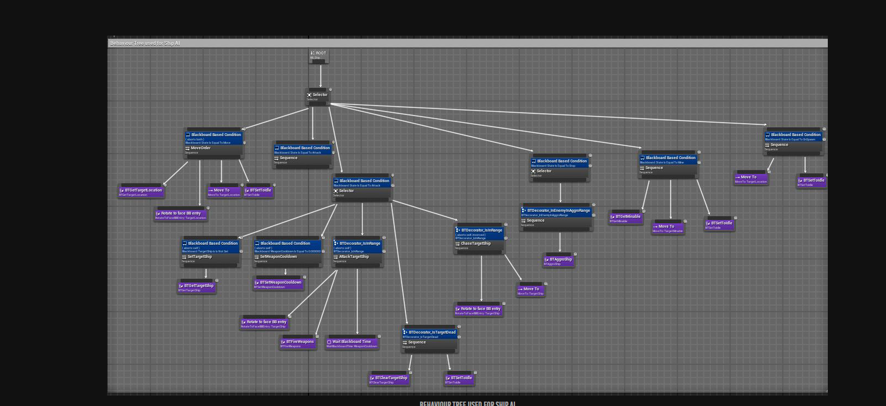
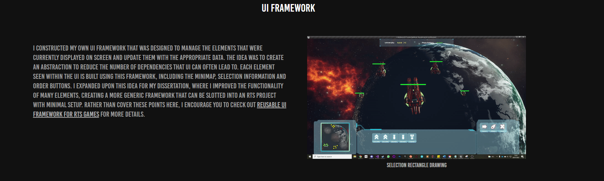
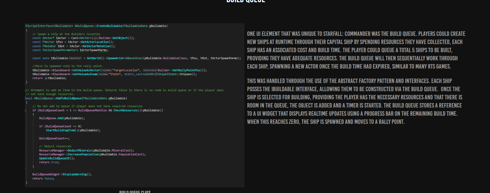

Starfall: Commander
Overview
Starfall: Commander is a real-time strategy game developed as my final-year university project using C++ and Unreal Engine 4. The project focused on gameplay architecture, AI and UI, and gave me experience building larger interconnected systems in C++.
AI & Order System
Units and ships receive player commands through an extensible order system supporting movement, attacking and stopping. Orders update an Unreal behaviour tree, with blackboards, custom decorators and tasks controlling the resulting AI behaviour. New orders and behaviours could be added without requiring changes throughout the existing AI code.
UI Framework
Developed a reusable UI framework to manage widget visibility, focus and the flow of data between gameplay systems and the interface. It supported unit selection, the minimap and player orders, reducing direct dependencies between individual UI elements and gameplay systems.
Build Queue
Developed a build queue for creating units at runtime, handling resource costs, build times, queue limits and spawning. Interfaces and an abstract factory approach allowed different unit types to share a construction pipeline while providing their own data and behaviour.


